Примеры
Для демонстрации работы с платформой создан отдельный проект, пополняемый новыми примерами.
Также в указанном проекте можно создавать новые задачи с запросами на новые примеры.
Здесь рассмотрим самый простой пример.
Простой пример с одним объектом
Для демонстрации работы с объектами, тегами, методами и экранами Grafana сделаем следующий пример.
Допустим, у нас есть лампочка и мы можем тем или иным способом получить данные по току и напряжению (работу с коннекторами рассмотрим в следующих примерах).
Кроме тока и напряжения у лампочки есть третий, расчётный тег - мощность.
При изменении силы тока или напряжения мощность должна перерасчитываться.
1. Объект
Открываем конфигуратор, выбираем папку «Объекты» и в меню команд узла выбираем «Новый объект»:
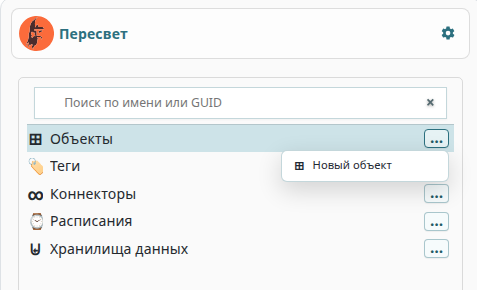
В появившемся окне свойств меняем имя объекта на «Лампочка»…
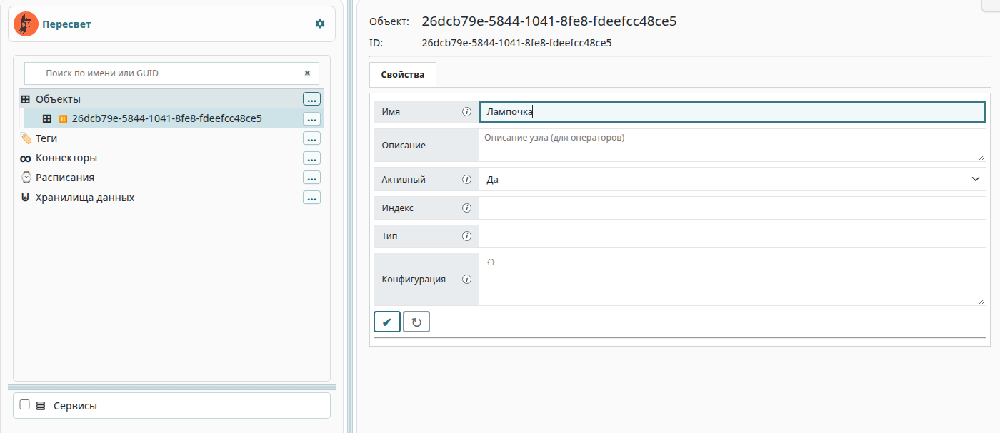
…и, нажав кнопку «Записать», сохраняем изменения:
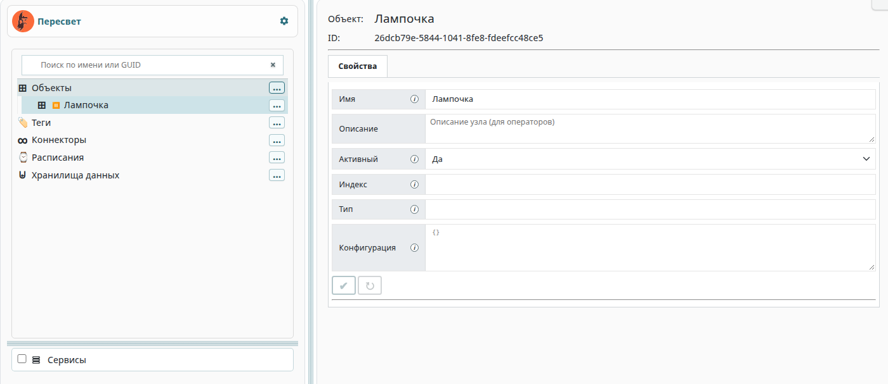
2. Теги
Оставляя текущим объектом «Лампочку», в меню команд выбираем «Новый тег»:
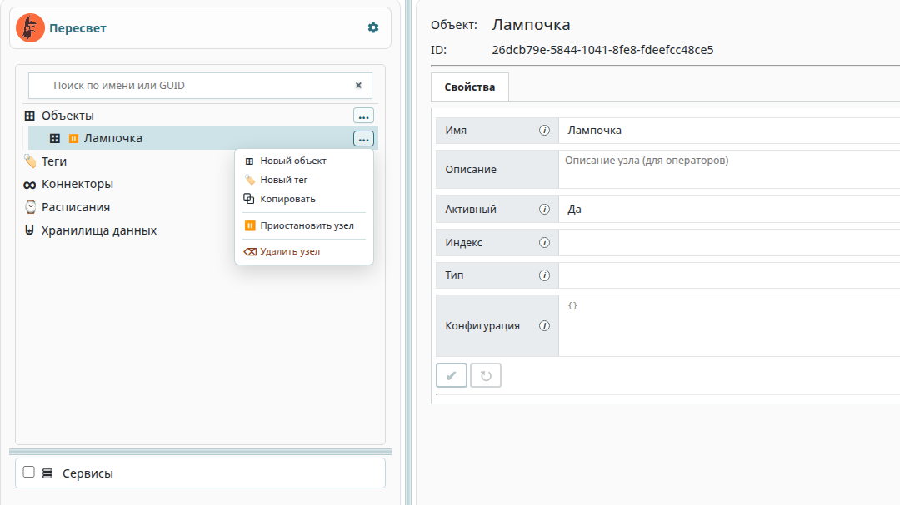
Меняем имя тега и единицы измерения…
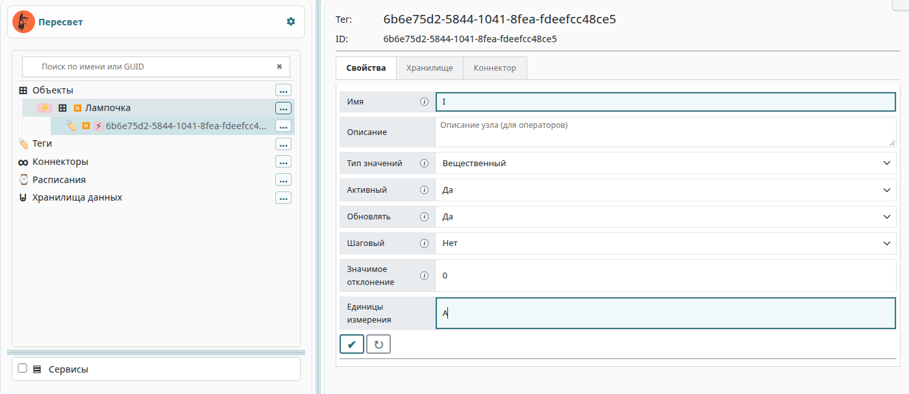
…и, нажав кнопку «Записать», сохраняем изменения:
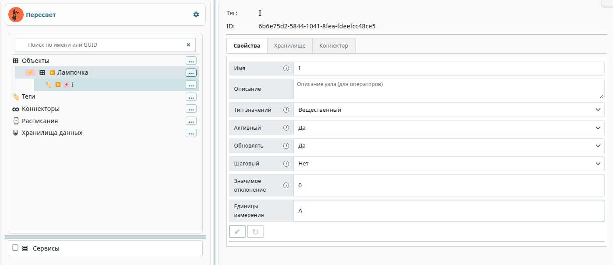
Аналогичным образом создаём ещё два тега, U и P:
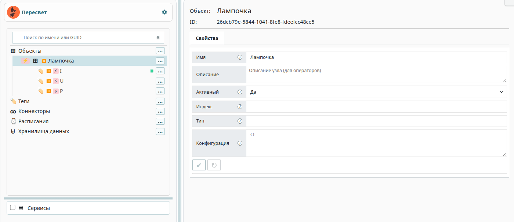
3. Запись/чтение данных
Проверим, что данные в теги записываются и читаются.
Выберем тег «I» и на вкладке «Хранилище» откроем панель «Данные тега»:
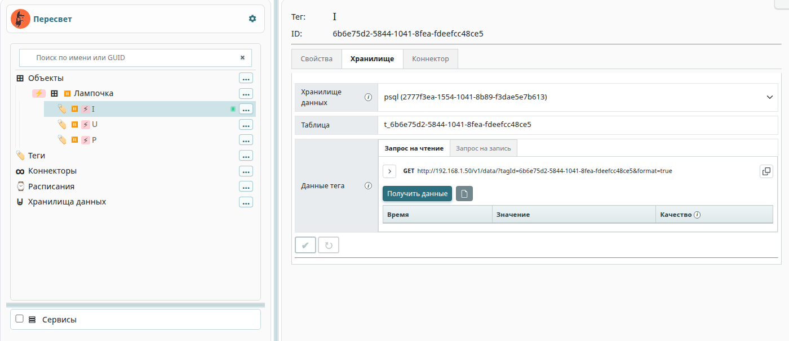
На закладке «Запрос на запись»:
В поле «Значение» впишем 0.
В поле «body» можно посмотреть сформированное тело запроса на запись.
Нажимаем кнопку «Записать данные», затем на закладке «Запрос на чтение» — «Получить данные».
В таблице появятся время и текущее значение тега «I»:
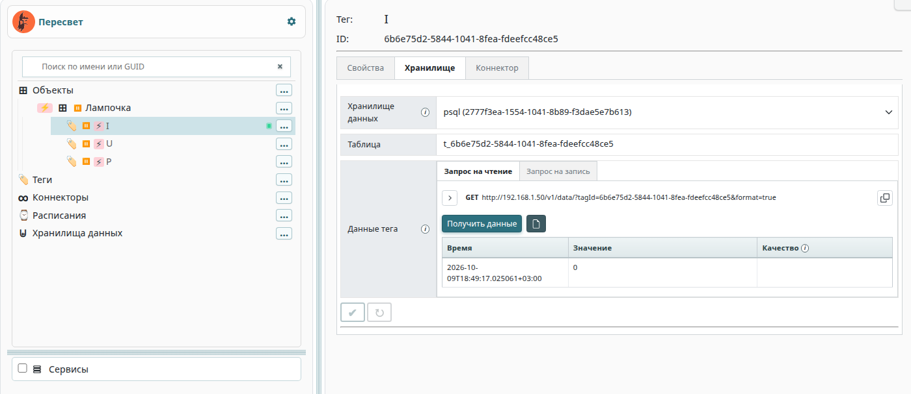
4. Расчётный метод
Создадим метод для расчёта мощности лампочки.
Для этого выберем тег «P» и в меню команд выберем «Новый метод».
Затем:
Изменим имя метода
В поле «Адрес» введём название метода, под которым он будет зарегистрирован в системе для вызовов. Запомним это имя -
power.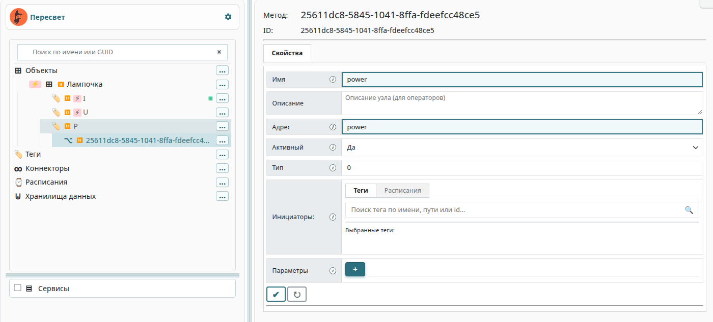
Блок «Инициаторы». Очень важный блок, в котором мы выбираем, какие события могут инициировать выполнение расчётного метода.
На вкладке «Теги» найдём I и U и добавим их. Изменение любого из этих тегов приводит к перерасчёту мощности.
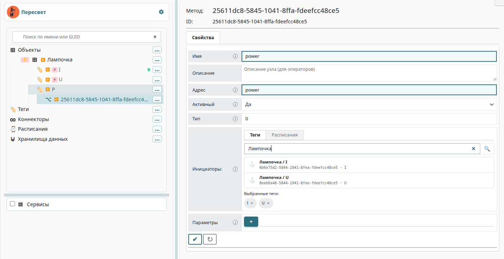
Внимание
Обратите внимание, что в списке возможных инициаторов расчёта нет самого тега «P»: изменение тега не может приводить к перерасчёту его самого, так как это вызовет бесконечный цикл расчётов.
Укажем, какие данные необходимо передать методу для расчёта.
Данные, передаваемые в метод в каждом параметре - это результат запроса
получения данных.Для расчёта мощности нужны текущие значения двух тегов: силы тока и напряжения. Поэтому создаём два параметра кнопкой «+».
Первый параметр (индекс 1) — сила тока, второй (индекс 2) — напряжение. Источник данных — «Данные тега»: после выбора тега запрос к платформе собирается сам.
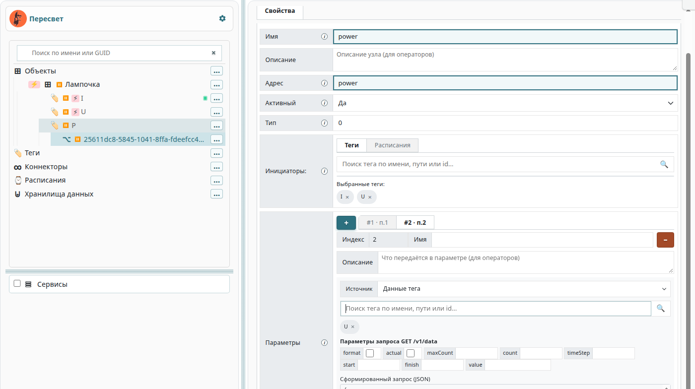
Внимание
После изучения документации на запрос
получения данныхможно править сформированный JSON запроса и собирать более сложные выборки.Внимание
Очень важный момент, относящийся к расчётам значений тегов: тег мощности рассчитывается, когда изменяется значение тегов «I» и «U». Допустим, расчёт инициируется изменением тега «I» и метка времени нового значения «I» - «2024-10-27 10:00:00+03:00». В этом случае запрос данных в параметрах будет производиться также на метку времени «2024-10-27 10:00:00+03:00» и новое рассчитанное значение тега мощности также будет записано с этой меткой времени, не смотря на то, что сам расчёт, возможно, будет производиться в другое время.
Нажимаем кнопку «Записать» для сохранения изменений.
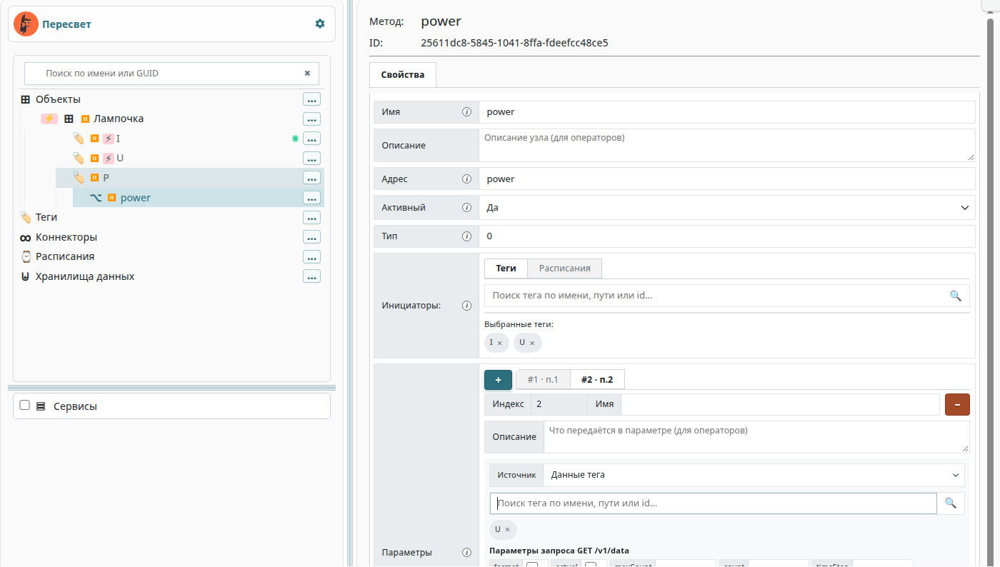
Теперь напишем код метода.
В папке methods проекта https://github.com/Vovaman/peresvet уже написан метод для этого примера.
Откроем файл methods/test_method.py и рассмотрим метод calc_power:
@rpc("power")
async def calc_power(I: dict, U: dict) -> float:
"""Метод возвращает произведение двух параметров.
"""
print(f"{int_to_local_timestamp(ts())} :: power")
# точка данных: [x, y, q] либо [y] / [x, y]
pI = I["data"][0]["data"][0]
pU = U["data"][0]["data"][0]
cur_I = (pI[0], pI[1])[len(pI) >= 2]
cur_U = (pU[0], pU[1])[len(pU) >= 2]
if cur_I == None or cur_U == None:
return 0
return cur_I * cur_U
Внимание
Первая строка: @rpc("power"): именно «power» мы вводили в поле
«Адрес» при создании метода!
Далее - строка объявления метода: async def calc_power(I: dict, U: dict) -> float:.
Первым параметром указана сила тока, вторым - напряжение. Точно так же, как мы указывали
индексы у параметров.
Далее метод пишет в консоль время вызова и считает мощность как произведение двух параметров.
5. Запуск расчётного метода
Для запуска метода необходимо установить пакеты, указанные в файле methods/requirements.txt либо
для всех пользователей:
$ pip3 install -r requirements.txt
Либо создав виртуальную среду проекта.
После установки пакетов запускаем в терминале скрипт в папке methods:
$ python3 test_method.py
Результат должен быть примерно таким:
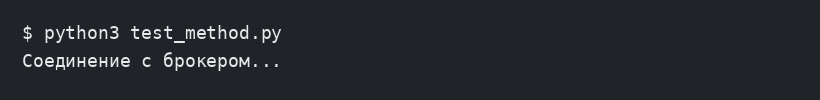
6. Проверим расчёт
Помним, что расчёт мощности инициируется изменениями значений тока и напряжения.
Запишем в тег «U» значение 230.
Для этого выберем в иерархии тег «U» и запишем в него требуемое значение:
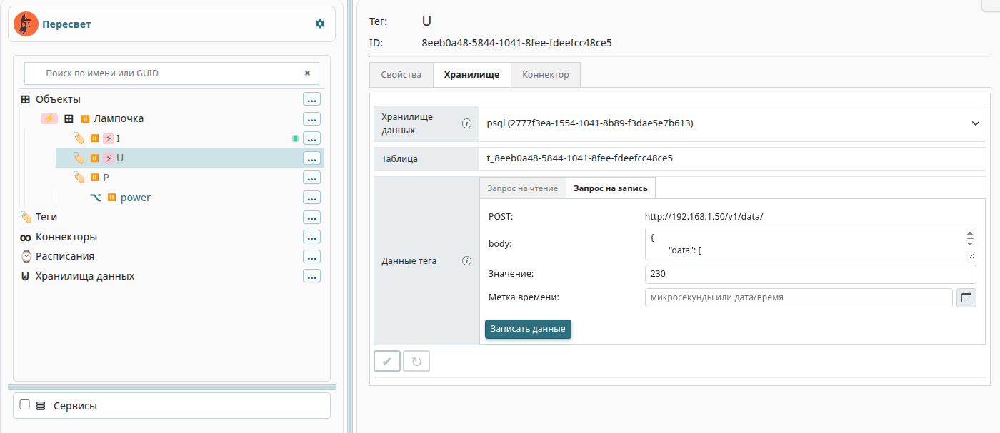
В консоли, в которой мы запустили метод, появится вывод:
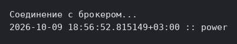
Проверим значение тега мощности «P». Оно должно быть равно 0, так как перед этим в тег «I» мы записали 0:
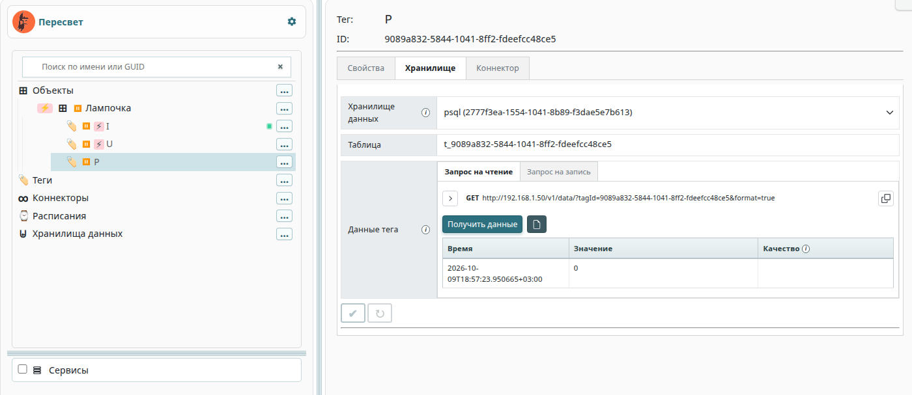
Теперь запишем в тег «I» значение 1:
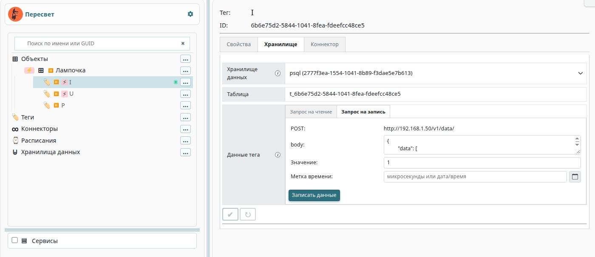
И проверим значение мощности, которое должно быть равно 230 Вт:
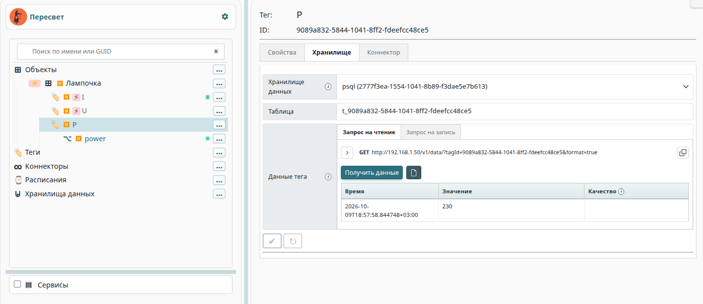
Примечание
В следующих примерах будет показано, как настроить получение данных в теги из внешних источников.
7. Отображение данных в Grafana
Примечание
Данные из платформы можно получать
описанным в документации запросом.
Данные тегов (как, впрочем, и всё общение с платформой) приходят в виде json и для манипулирования этими данными в Grafan’е рекомендуется изучить языки манипулирования json-данными JSONata или JSONPath.
Предпочтительнее JSONata, так как обладает большими возможностями.
Настроим отображение:
текущих значений тегов «I», «U» и «P»;
трендов значений этих тегов;
Создадим новый дашборд.
Откройте раздел «Дашборды» и нажмите кнопку «Новые элементы».
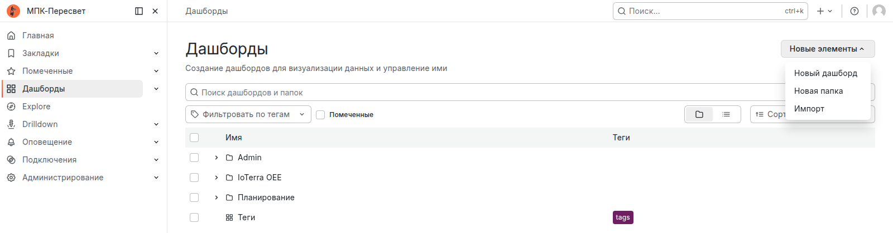
В меню выберите «Новый дашборд». Откроется пустой дашборд:
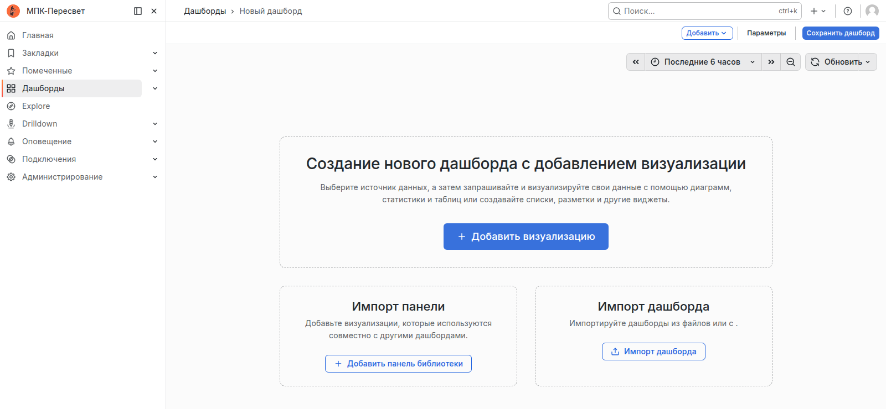
Нажмите «Добавить визуализацию» и в окне «Выбор источника данных» выберите
peresvet: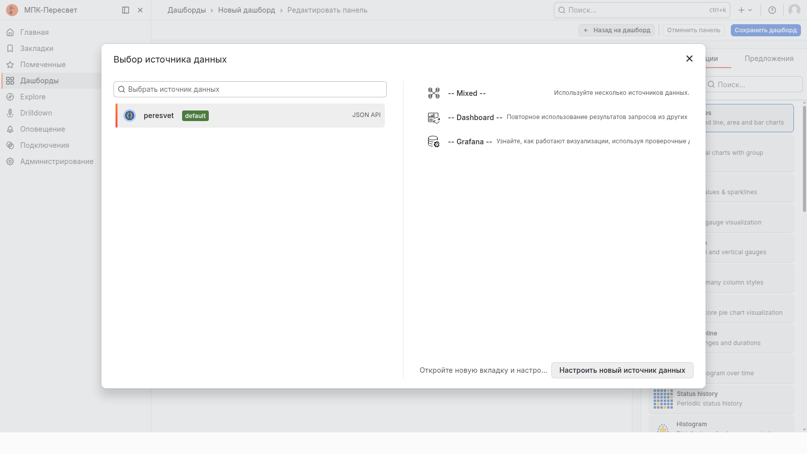
В окне настройки панели выберите тип «Stat».
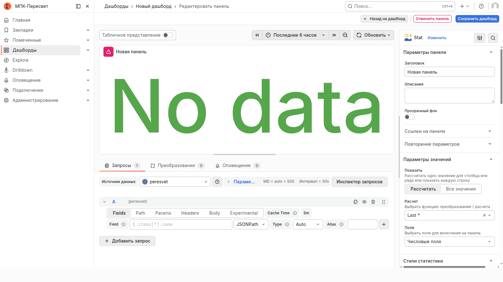
На закладке
Pathукажите путь/data/.Примечание
У источника данных
peresvetуже задан адрес платформыhttp://<server>/v1/. Путь/data/дополняет его до запроса данных тегов. Так же можно обращаться кobjects,tagsи другим сущностям платформы.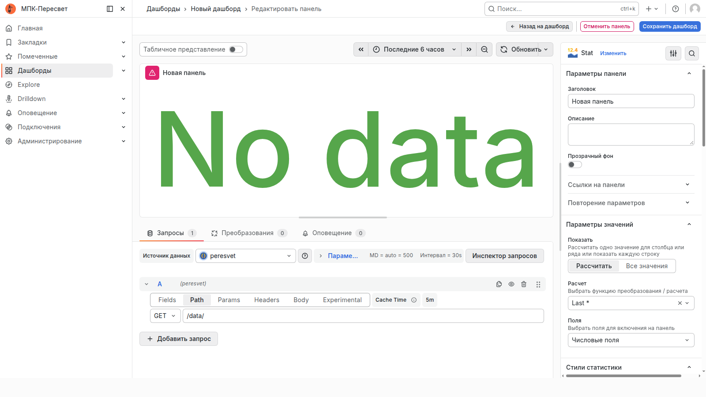
Настроим запросы получения данных.
Запрос можно скопировать из конфигуратора. Откройте тег «I», вкладку «Хранилище» и строку «Запрос на чтение».
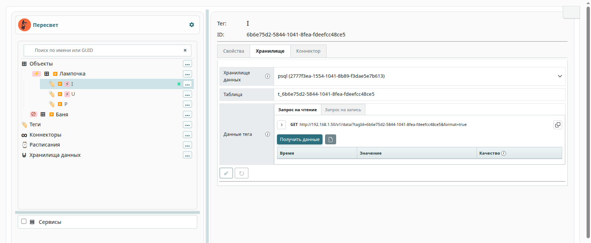
На закладке
Paramsдобавьте параметры из этой строки. КлючtagId— идентификатор тега, ключformat—true: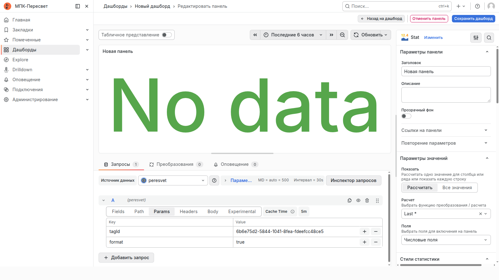
Далее:
Перейдите на закладку
Fieldsи назовите запросI(щёлкните букву запроса слева).В поле JSONPath введите
$.data[0].data[0][1]. В ответе платформы сначала идёт метка времени, затем значение тега.На панели появится
1— записанное ранее значение тока.
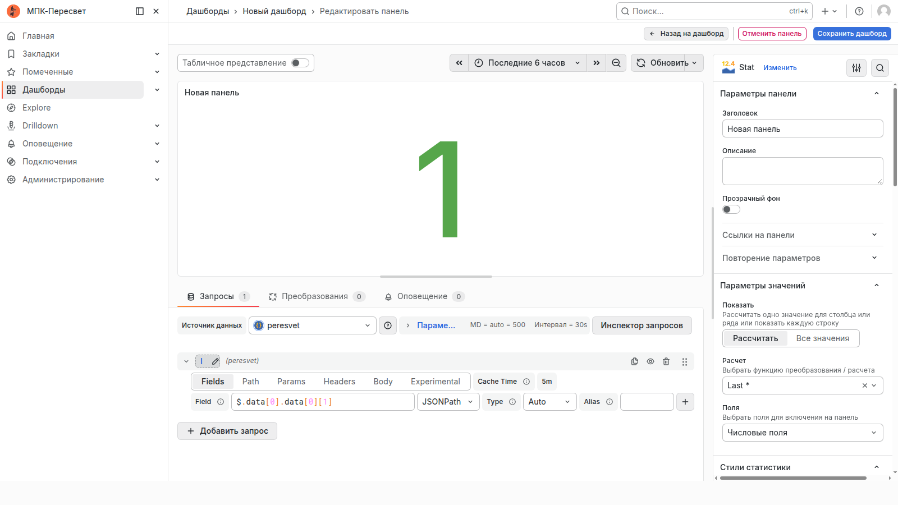
Повторите те же шаги для тегов напряжения и мощности. Новый запрос добавляется кнопкой «Добавить запрос» или значком дублирования. У каждого запроса свой
tagIdи то же выражение JSONPath. Назовите запросыUиP.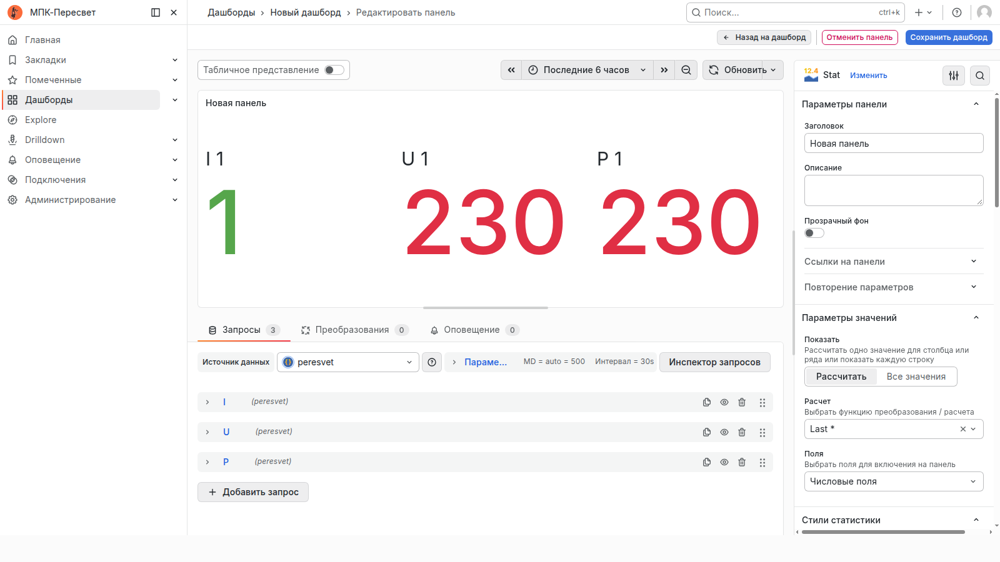
Предупреждение
У каждого запроса отключите кэш: в поле
Cache Timeвыберите0s.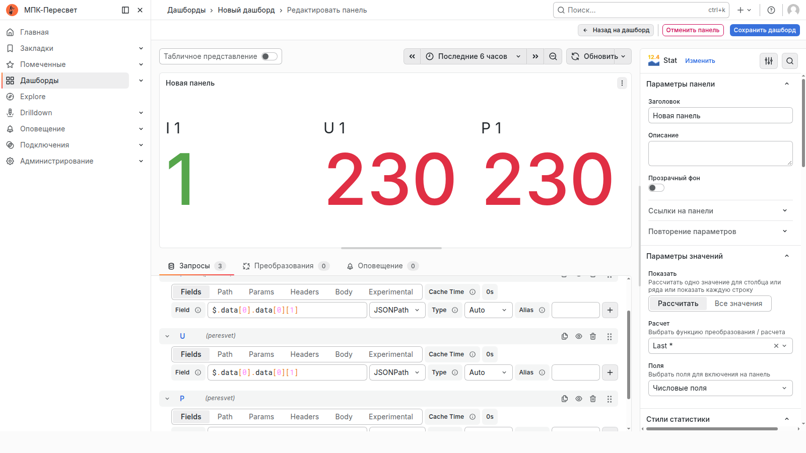
Окончательная настройка панели.
Значения 230 отображаются красным цветом: порог по умолчанию равен 80. Удалите этот порог в блоке «Пороговые значения». Останется базовый зелёный цвет.
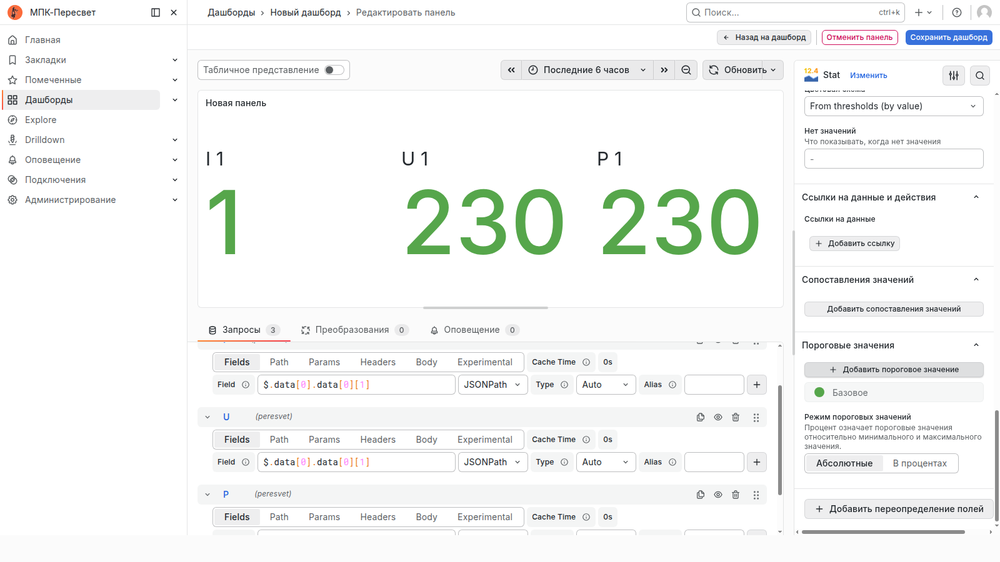
Переименуйте панель в «Электрические параметры» и нажмите «Сохранить дашборд». В окне сохранения задайте имя дашборда, например «Лампочка».
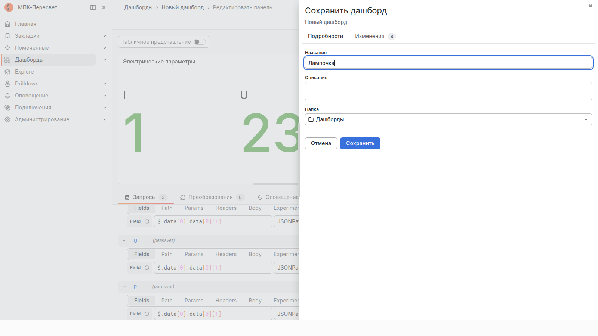
Предупреждение
Рядом с именем тега Grafana показывает имя поля. Впишите в
Aliasпробел — на панели останется имя запроса:I,UиP.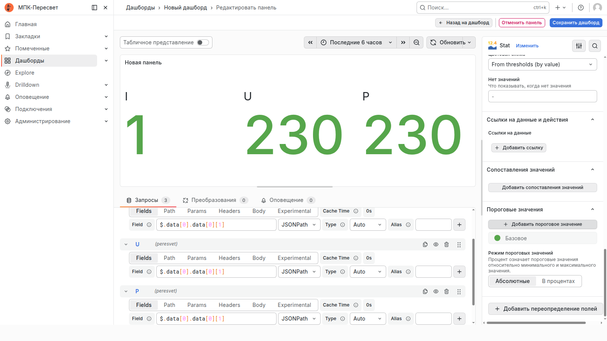
Вернитесь на дашборд и добавьте панель тренда: «Добавить» → «Визуализация».
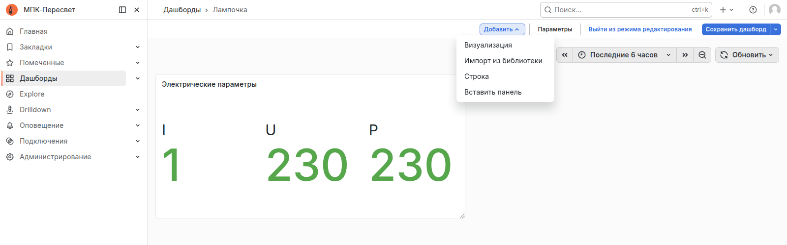
Настройка панели с трендом.
Тип панели оставьте «Time series» и назовите панель «Тренд».
Параметры запроса те же, что у панели текущих значений, и ещё две границы интервала:
tagId— идентификатор тега;format=true;start=$__isoFrom();finish=$__isoTo().
$__isoFrom()и$__isoTo()Grafana подставляет как начало и конец выбранного на дашборде периода.На закладке
Fieldsу каждого из трёх запросов две строки:$.data[0].data[*][0], типTime— метка времени;$.data[0].data[*][1], типNumber, вAliasимя тега (I,UилиP).
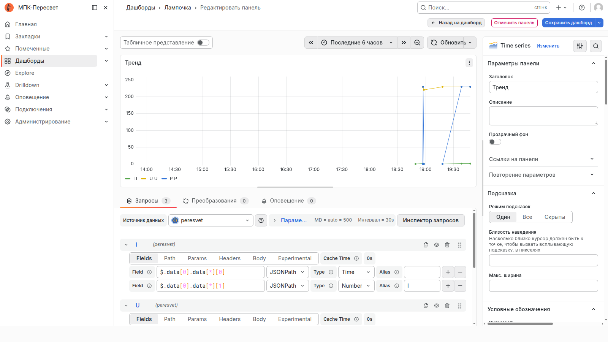
Выбор временного периода.
Выберите интервал, за который в тегах уже есть данные (например, «Последний 1 час»), и период обновления экрана (например, 5 с).
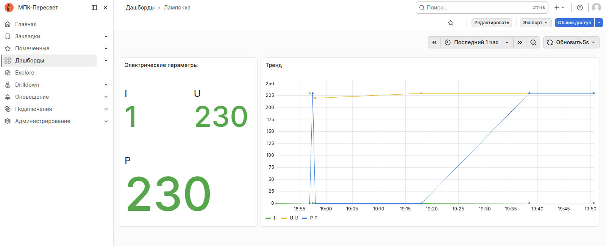
Проверим работу модели. Запишите в тег «I» значение 0,5, а в тег «U» — 220. Запущенный на предыдущем шаге метод
powerпересчитает мощность. На панели отобразятся ток 0,5, напряжение 220 и мощность 110: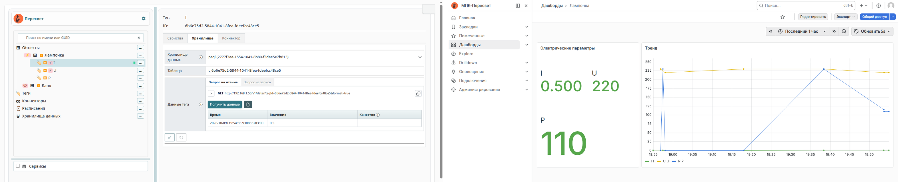